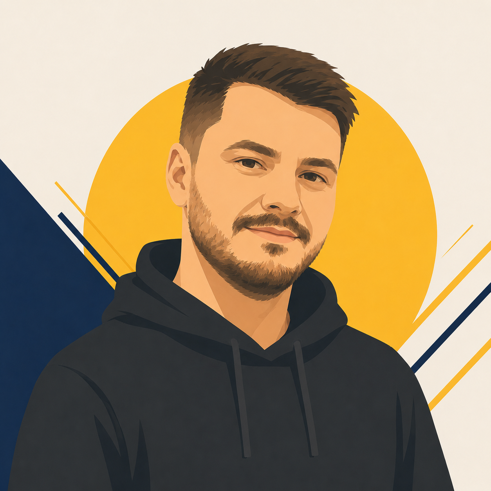

Валентин Ігнатов
UI/UX дизайнер · організаційна структура · інформаційний супровід
Через професійний майндсет бачить можливості допомагати тим, у кого є ініціатива і запал. Бере на себе інформаційну, візуальну й організаційну частину — щоб люди в полі займалися своєю справою, а рутину виконували машини.
Впевнений: популяризувати безпілотні системи, вогневу й тактичну підготовку, тактичну медицину — надважливо для країни, яка нікуди не дінеться від військової загрози. Ця загроза існуватиме рівно стільки, скільки існуватиме сама Україна. Тому розвивати навички, що покращують обороноздатність, — не опція, а необхідність.
«Супер важливо розвивати у людей навички, які будуть сприяти покращенню обороноздатності України».
Знання дронів — і для оборони, і для цивільних професій
Впевненість у собі через реальні вміння
Навички, які рятують життя — на війні й у мирний час
Особливо важливо, коли мова про інженерну й технічну підготовку молодих юнаків і дівчат. Це навички, які зроблять їх сильнішими. Страх перед війною і загрозами перестане бути паралізуючим. Можливо, більше юнаків залишаться в Україні — через те, що не будуть боятися. Через те, що будуть впевненішими в собі, у своїх навичках, у своїй країні, у завтрашньому дні.
Страх паралізує. Невпевненість у собі, у країні. Бажання виїхати.
Впевненість у собі й у завтрашньому дні. Бажання залишитися і діяти.
«Можливо, більше юнаків залишаться в Україні, а не виїдуть. Через те що не будуть боятися. Через те що будуть трошки більш впевненими — в собі, в своїх навичках, в своїй країні».
Через інструменти UI/UX дизайнера бачить конкретні можливості: позиціонування організації в інфопросторі, систематизація роботи, зниження порогу входу — і до інформації, і до самої організації. Візуальний супровід, який відповідає рівню амбіцій ГО, що на щось претендує.
Як має виглядати організація, яка на щось претендує — бренд, стиль, подача.
Присутність в інфопросторі — щоб ініціативу бачили, розуміли й підтримували.
Зниження бар'єру — і до інформації про діяльність, і до вступу в організацію.
Структурувати роботу так, щоб команда фокусувалася на суті, а не на рутині.
Структурувати роботу ГО за допомогою найпередовіших моделей штучного інтелекту. Забрати на себе рутинні задачі й делегувати їх машинам, що збирають і складають дані по поличках не гірше за людей — а іноді навіть краще. Функція: залишити людям роботу в полі, а на себе забрати інформаційну частину.
«Залишити хлопцям, дівчатам їх роботу в полі, а на себе забрати інформаційну частину, базу даних, формування документів, структурування, зберігання і оформлення».
Документи
Формування, оформлення, шаблони
База даних
Структуроване зберігання інформації
ШІ-автоматизація
Рутинні задачі делеговані машинам
Команда — в полі
Люди фокусуються на викладанні й дітях
Щоб ініціатива дійсно працювала як задумано, потрібен тандем: соціальні навички, викладацькі, психологічні — і, звісно, військово-технічні. Жодна з цих складових окремо не дасть результату. Разом — це механізм, здатний змінити підхід до підготовки молоді.
Вміння працювати з людьми, будувати спільноту, залучати нових учасників.
Методика, подача матеріалу, робота з підлітками різного рівня підготовки.
Розуміння мотивації, страхів, потреб — і дітей, і ветеранів, і батьків.
Реальний контент: дрони, тактика, зв'язок, медицина — те, заради чого все робиться.
«Тандем навичок соціальних, викладацьких, психологічних і, звісно ж, військово-технічних — буде ключем до того, щоб ініціатива дійсно працювала так, як і задумано».
Що конкретно Валентин бере на себе в організації — як дизайнер, систематизатор і людина, яка вірить у силу технологій для підтримки ініціативи.
Бренд, айдентика, подача — щоб організація виглядала на рівні своїх амбіцій.
Делегування рутини машинам — документи, дані, структура. Найпередовіші моделі.
Позиціонування ГО, зниження порогу входу, комунікація з аудиторією.
Допомагати тим, у кого є запал і ідеї — організаційно, інформаційно, технічно.
Цитати з голосового запису, які найкраще передають позицію і мотивацію.
Ця загроза буде існувати рівно до того моменту, допоки буде існувати сама Україна.
Я сам як батько хотів би, щоб моя власна дитина отримувала такі навички.
Залишити хлопцям, дівчатам їх роботу в полі, а на себе забрати інформаційну частину, базу даних, документи, структурування й оформлення.
Складено за голосовим записом Валентина. Формулювання відредаговано для читабельності.